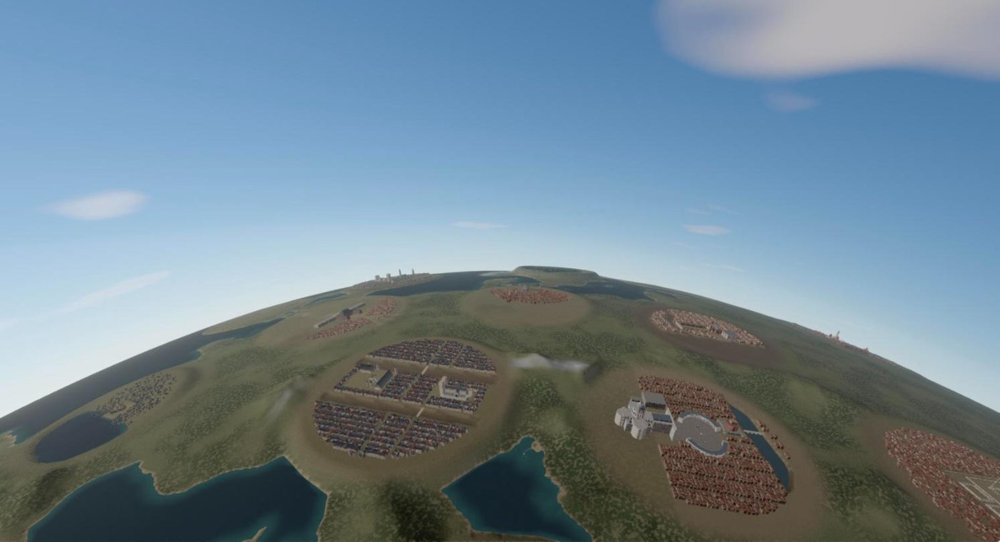
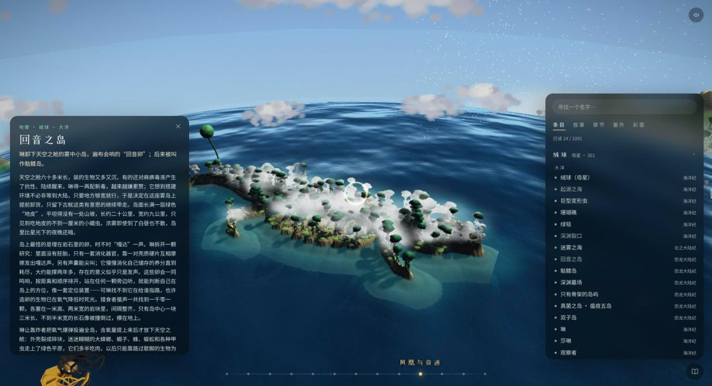

I build backends that stay correct when things break, agents that argue before they decide, and worlds you can walk through.
Zerui (Alex) Wang. Computer Science at the University of Waterloo, graduating April 2028. Looking for Summer 2027 internships in backend, ML and AI agents.
MyGeotab Driver and Safety Coaching APIs in C#/.NET. Traced 20-second searches on 19M PostgreSQL rows to full-table scans and validated an index that brought them to 35 ms. Fixed two permission bugs, one of which exposed HR-sensitive data, and an error-masking bug in a shared transaction library.
Sep – Dec 2025
iHuman Inc. Software Developer Intern · Beijing
Built a React/FastAPI platform that runs multi-turn evaluations of English-conversation agents: test rounds went from hours to minutes. Asynchronous orchestration up to 100+ dialogue turns per task, and scoring that pairs rule-based metrics with LLM-as-judge ratings.
Jan – Apr 2025
Joyson Robot Software Developer Intern · Ningbo
A news aggregation service with local LLM summarization; a refresh cache cut redundant API calls by 80%. Fine-tuned a vision-language model with LoRA on 1,000+ annotated images for fruit recognition.
Systems
Two of my backend projects, replayed in your browser. Press the buttons and watch what the design does when things go wrong. The real systems are on GitHub.
Distributed Order Processing System
Five Go services behind one checkout. Every money and stock change survives retries, timeouts and crashes, and is applied exactly once.
A replay of the design in the browser, not the live services. Tested for real in the repo: 1,000 concurrent orders and 3,000 flash-sale buyers on 100 units, zero oversold; 30% of payments timing out, zero double charges. Source and design notes
Polyphony
Eleven agents, the voices of one mind, read a single shared stream and each decides for itself whether to speak. Nobody schedules them. When a decision is due, they vote with weights they give each other.
One ordera PostgreSQL sequence orders every thought, so concurrent agents never read out of order
Cheap listen, costly speecha small model decides whether to speak; only 16% of 744 listens escalated to full generation
MemoryRedis holds the hot window, pgvector recalls older thoughts by meaning
Votes that survive crashescadences run as checkpointed LangGraph workflows and resume after a restart
An MCP serverClaude or any MCP client can bring a question to the voices and get their decision
Scripted lines replaying the mechanism; the real voices run on your own model key. Source and design
Worlds
Things I make outside work: places you can walk through and games that read you. All of them run in the browser.

The planet from the air: Italy, with Rome, Florence and Venice on it. Fly up and the ground curves away.
Memory of Civilizations
A small planet with Earth's continents where 57 civilizations stand near where they stood, each a place at a time: Babylon, Angkor, Edo Himeji, Mughal Agra, Muscovy, 1970s Sydney. Every landmark is built from a sourced dossier at true scale, with its interior and a townscape of its people round it, lit with ray-traced indirect light baked offline and given music synthesised in the browser. Travel from the globe and you arrive at each one's best view.
A 3D exhibition of a Chinese novel I love. Drag through the planet's ages on its timeline; open any of its 1,091 entries and the camera flies down to the place while the entry opens with its summary, related entries and chapters.

An entry: the Island of Echoes.
three.js · Playwright tests across desktop and phone
A wordless troll platformer in 100 levels. It learns how you play (your speed, your retries, where you died) and sets its traps for that player. The clip is the test suite playing: on each level the obvious route dies, then the route that reads the trap clears. Every level ships with those tests and a beam-search solver.
vanilla JS · canvas · scripted tests and a solver for every level
A live macOS wallpaper of tens of thousands of particles. Each universe is a few hundred bytes of parameters over one engine: a stack of layers, each pulled only by the one above it, with the cursor at the top.